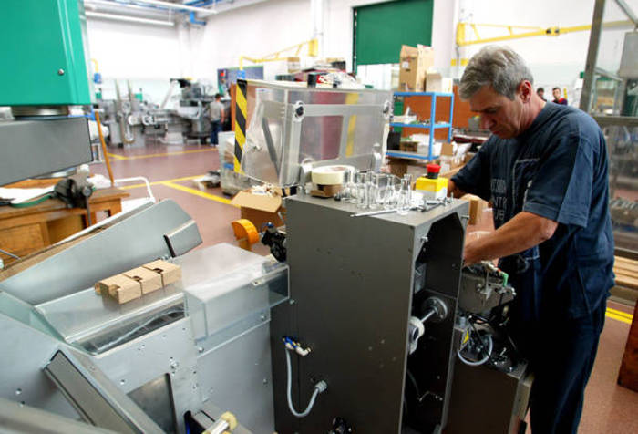
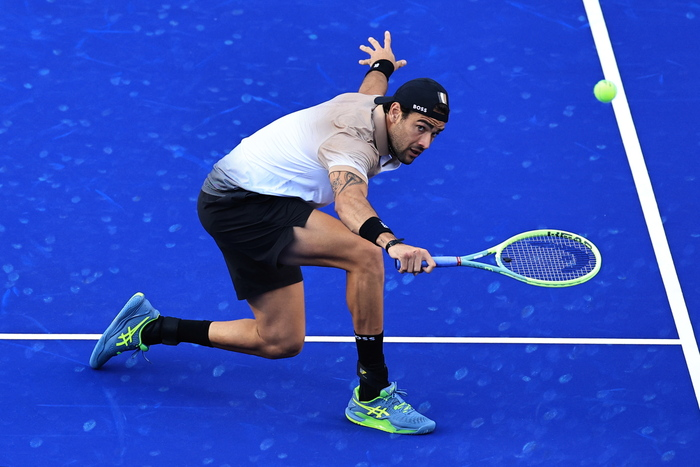

L'inflazione scende a febbraio ma aumenta il carrello della spesa
Il calo è dovuto alla flessione dei prezzi energetici, ma gli alimentari accelerano ancora.
Notizie
Notizie
Il calo è dovuto alla flessione dei prezzi energetici, ma gli alimentari accelerano ancora.
Stretta da 50 punti a marzo, poi si valuta in base ai dati macro.
Lo stesso valore segnato a gennaio
Istat, cresce anche il numero degli occupati, sono 23,3 milioni
Il 26enne numero 24 al mondo batte 6-3-6-3 il coetaneo svedese Ymer
Ko agli ottavi anche Musetti, ora tocca a Bonadio
Incidente mortale, nella notte, alla periferia di Mazara del Vallo, nel Trapanese.
Code lunghe fino a 10 km. Automezzi bloccati tra Rapallo e Chiavari.